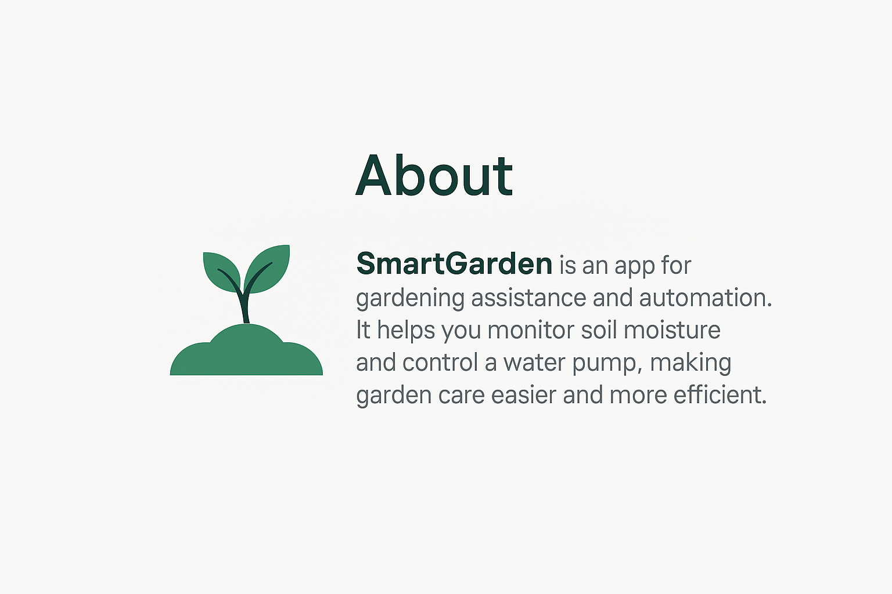
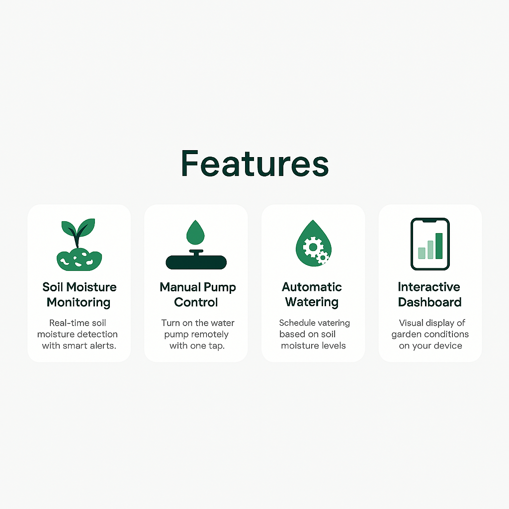
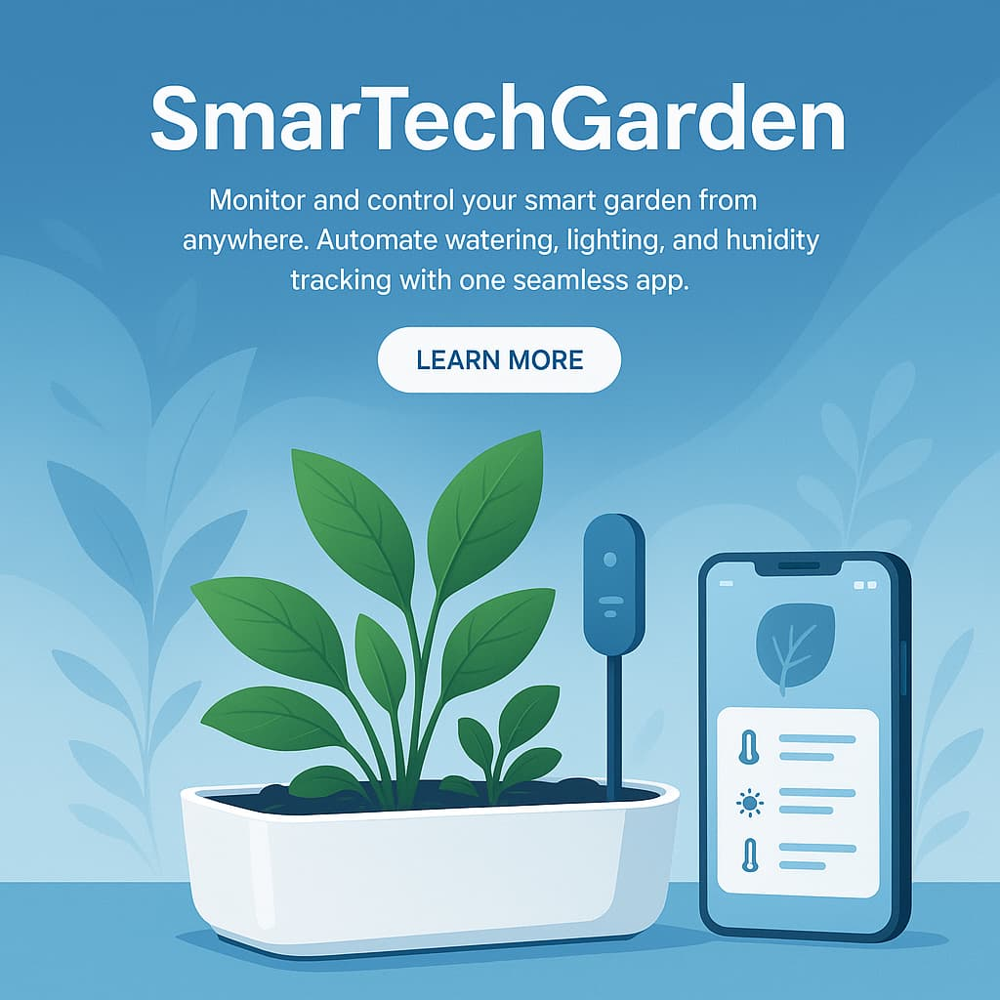
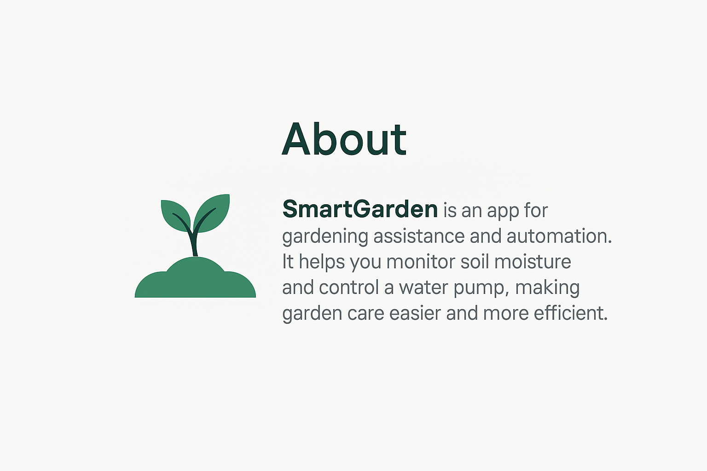
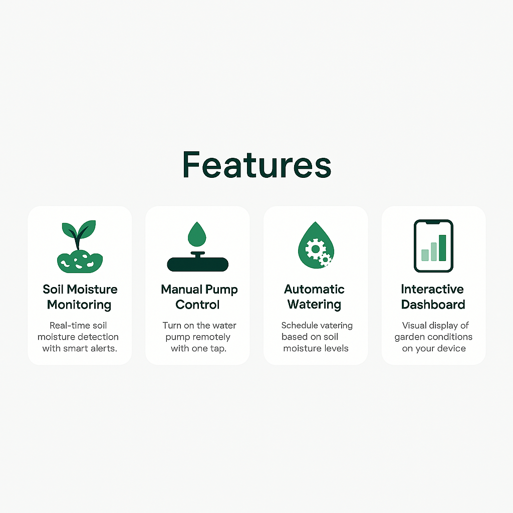
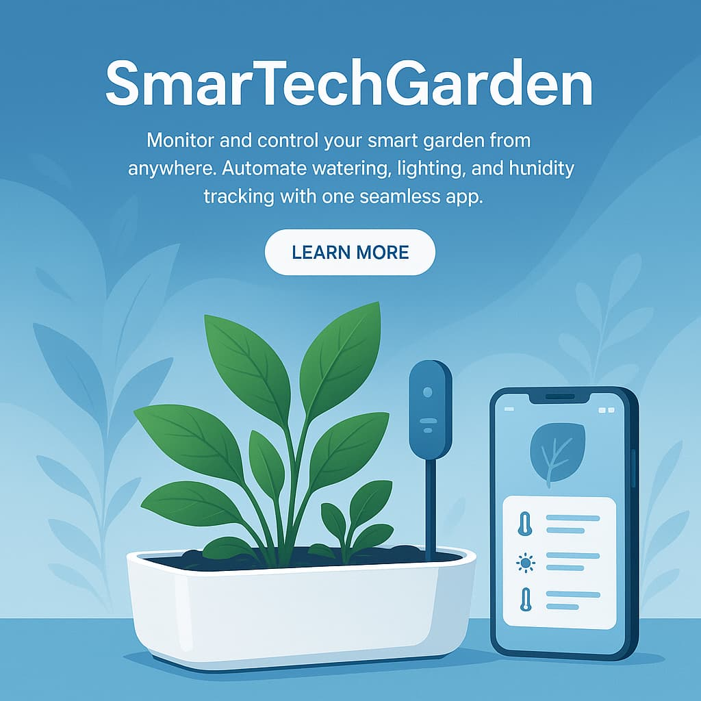
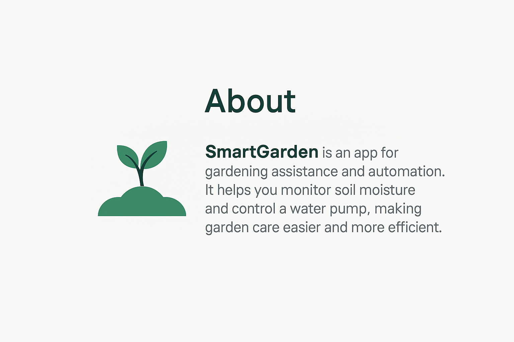
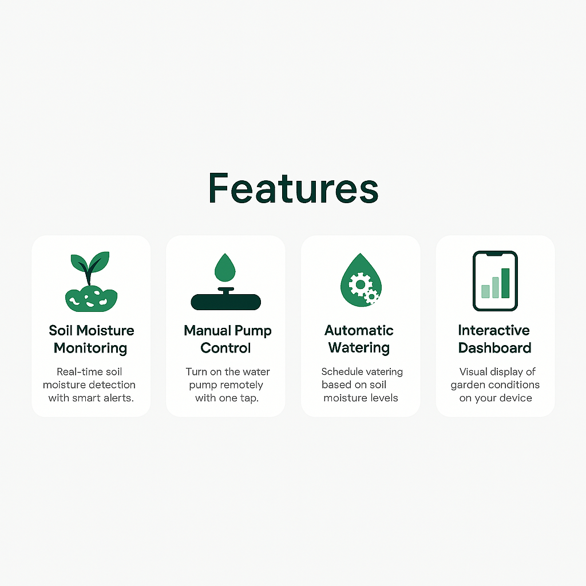
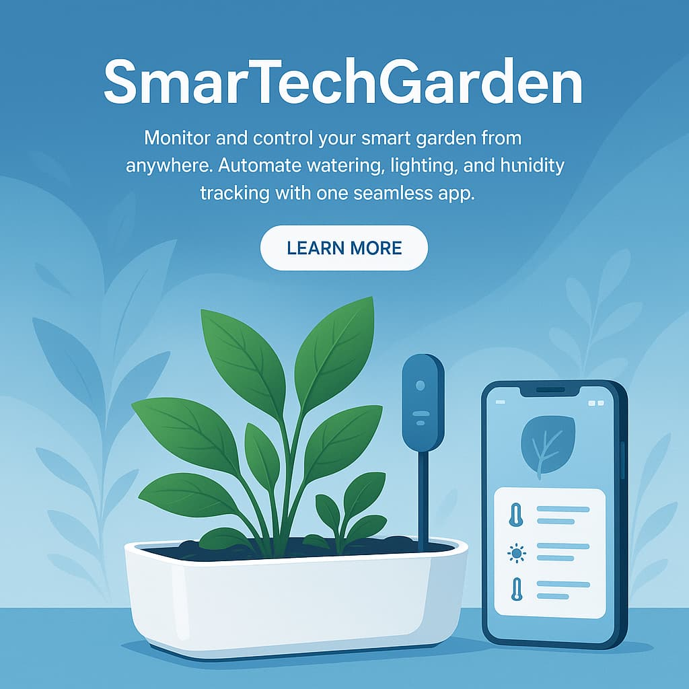

App Interface Preview
 





Smart Farming for Modern Living
Explore FeaturesSmartech Garden helps you automate your garden with real-time monitoring and smart features to ensure your plants stay healthy.
Real-time soil moisture detection with smart alerts.
Turn on the water pump remotely with one tap.
Schedule watering times or let the system decide when your plants need it.
Visualize your garden's condition with clean and clear UI.


